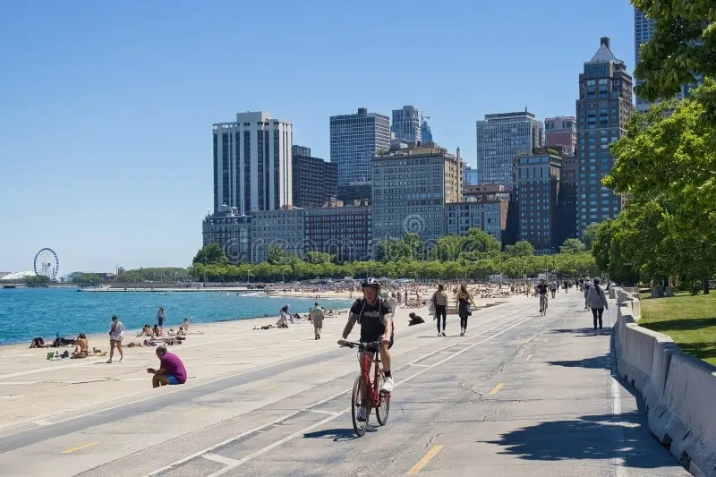

The Lakefront Trail
The Lakefront Trail runs about 18 miles along Lake Michigan, from the north side of Chicago to the south side. It offers skyline views, beaches, parks, and plenty of places to stop and rest.

Why I Love It
- It clears my head after a long day of studying
- It keeps me active and healthy
- It lets me see a different side of Chicago each season
- It is a great way to spend time with friends
My Favorite Stops
- North Avenue Beach
- Navy Pier
- Millennium Park
- Museum Campus
- Promontory Point
Beginner Tips
- Wear a helmet
- Protect your head every ride, no matter how short.
- Ride early
- Weekend mornings are quieter and cooler than afternoons.
- Bring water
- Lakeside breezes can hide how much you are sweating.
- Follow the rules
- Stay to the right, pass on the left, and call out when passing.
Watch a Ride
Here is a short clip of a ride through the mountains.